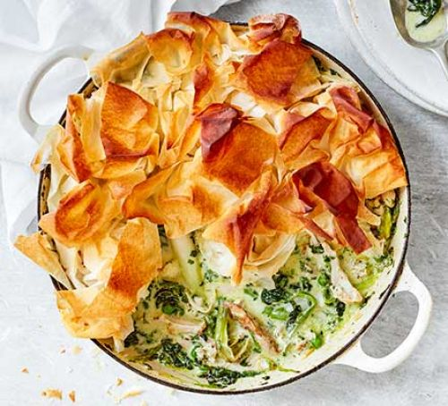

Filo Chicken Pie

Ingredients
75g butter
2 leekshalved lengthways and sliced
300g chestnut mushrooms, sliced
25g flour
300ml chicken stock (ideally from our pot roast recipe)
300g cooked chicken (ideally from our pot roast recipe), shredded
75ml double cream
2 tbsp wholegrain mustard
small handful parsley
6 sheets of filo pastry
60ml olive oil
1 tsp thyme leaves
1 tsp nigella seeds
cabbage and mash, to serve (optional)